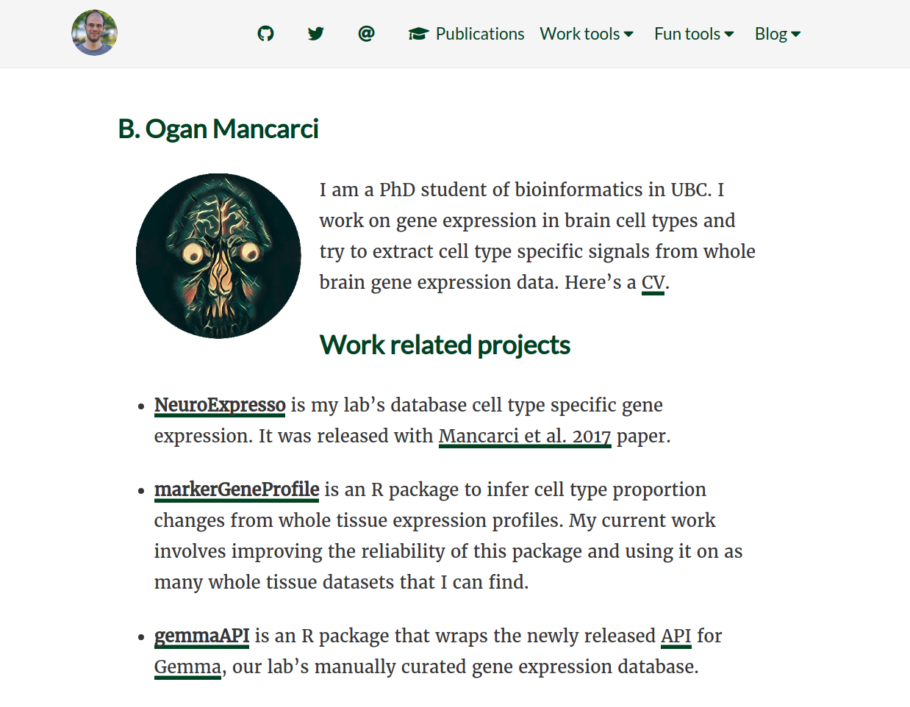
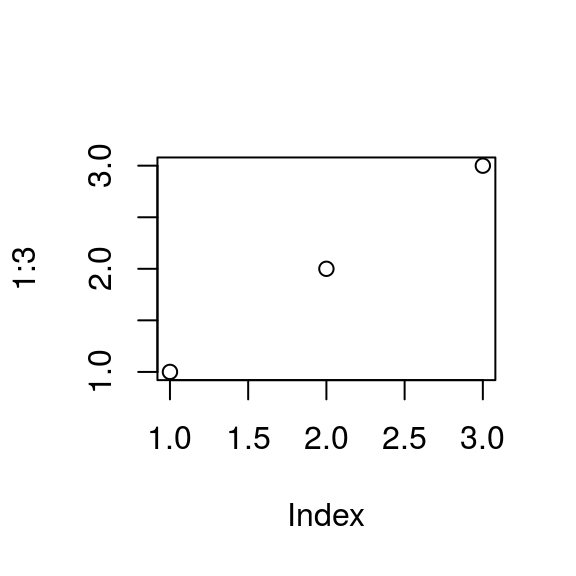
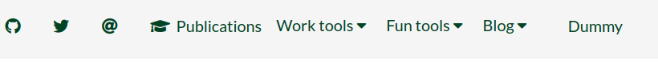
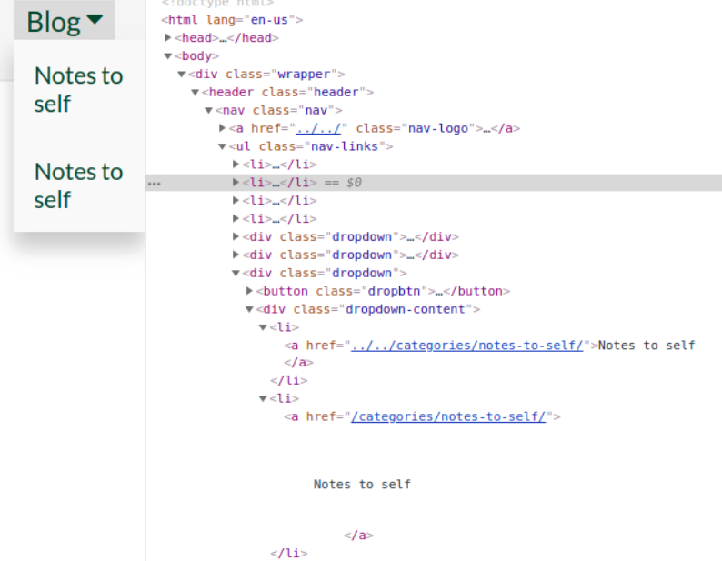
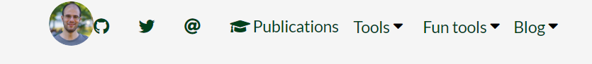
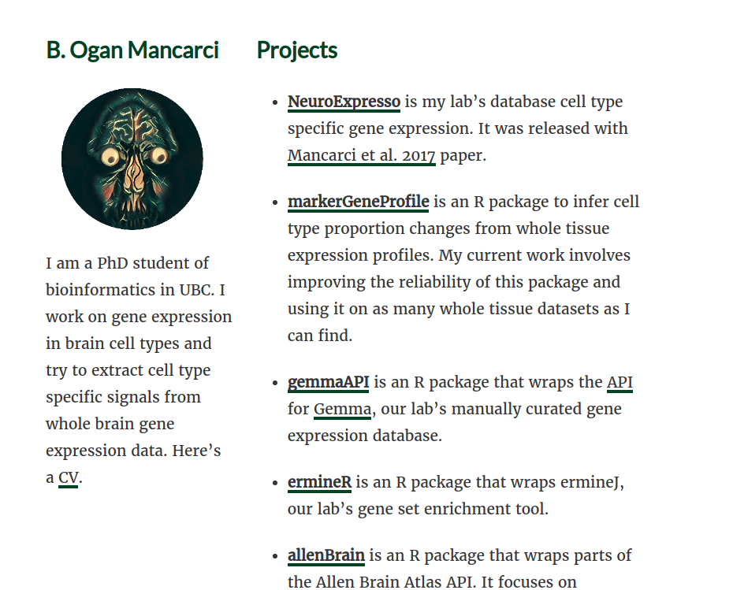
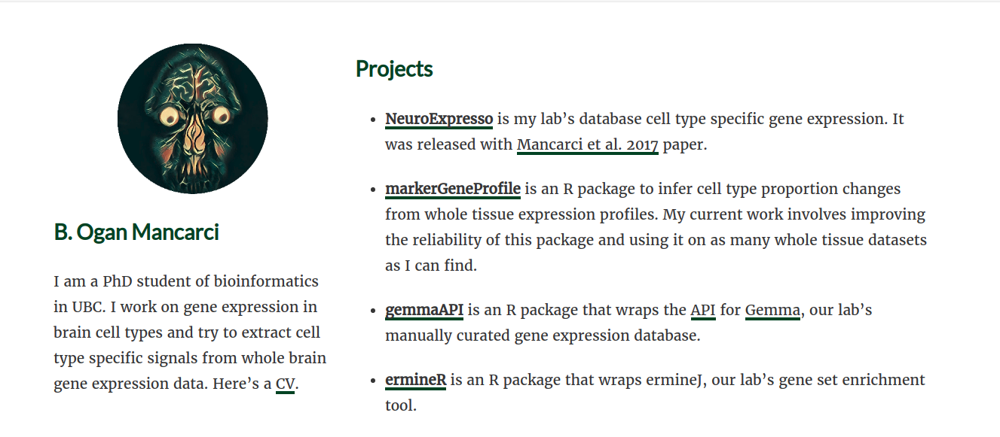

This is still me rambling about the building process of this site but I have a better idea how things work. It seems like for now this blog is mostly about itself. I am generally happy with how things look but there are still a few visible and invisible changes I want to make to the site.
Currently the site looks like this

My plan now is to make a two column structure for the homepage and some behind the scene changes that should help me to make changes easier and organize things better.
Static resource organization
In the last post, I was saving the images I was using into the static/images directory haphazardly. This is not ideal as I am more likely to make a mistake resulting in a missing/wrong images. I also can’t go through the images for a particular post easily. So I want to separate images based on the posts they belong. I am unsure how should I name the directories though. I figure I can probably follow the same standards as an Rmd file.
Since this is an .Rmd file I can create a plot and see where it is saved when the site is built
plot(1:3)
Hmm… So the image is created as
<img src="../post/2019-01-08-note-to-self-fine-tuning-the-site_files/figure-html/unnamed-chunk-1-1.png" width="288">But I don’t see the image saved in my project directory. It seems like they are saved directly into public/post and I don’t want to save my images there. I guess I can continue to use static/images directory with more descriptive names. Don’t want the name to be that long though. Autocomplete does not work in these files by default since the default working directory is the project root not within static/images. For simplicity, I will place all additional files used by this post in static/images/fineTuning directory and will move the images used in the previous post to static/images/settingUp. Any future posts will get their own little directories.
Code cleanup
As I was looking at the code of the default theme, I noticed that Disqus comment section
is already controlled by a built in variable disable_comments
{{ if and (not (eq .Site.DisqusShortname "")) (not .Params.disable_comments) }}
...
{{end}}Which means my edit to the single.html was completely unnecesary. The built in support
also has me set the variable to true to disable. Based on experimentation with the previous
post, the default value for a variable seems to be false as my
{{if .Params.disqus}}
{{ partial "disqus.html" .}}
{{end}}block in the single.html caused disqus comments to be disabled if I didn’t set anything.
The default approach is simply superior and I didn’t make any other changes on the single.html. I was considering just deleting it but then I remembered I didn’t want the reading time to appear next to my page title so I’ll just revert my previous edits and comment out the reading time section instead.
The other thing I want to change is how I handle the Pre argument of [[menu.main]] items in config.toml are handled. Currently, it assumes they are a font-awesome icon. It also sets the aria-hidden attribute of the icons to true. aria-hidden appears to be an accessibility feature that makes screen readers ignore the icon. I want better control over what I add before a menu item because:
- Some of the menu items only use the icon to describe themselves. So making them invisible for the blind is not the best idea.
- On font-awesome website, it automatically copies the entire required code when you search for an icon and click it’s code. Which means having to write the name of the icon by itself is actually more work than writing the entire code
- I may want to add something that is not a font-awesome icon before the menu items.
So it’s best that Pre is simply placed as is and when I want icons I should just add the tag in its entirety
The part of nav.html that deals with iterating over menu items is
{{ range .Site.Menus.main }}
{{ if .HasChildren}}
<div class="dropdown">
<button class="dropbtn">
<i class="{{ .Pre }}" aria-hidden="true"></i> {{ .Name }}
<i class="fas fa-caret-down"></i>
</button>
<div class="dropdown-content">
{{range .Children}}
<li><a href="{{ .URL }}"><i class="{{ .Pre }}" aria-hidden="true"></i> {{ .Name }}</a></li>
{{ end }}
</div>
</div>
{{ else }}
<li><a href="{{ .URL }}"><i class="{{ .Pre }}" aria-hidden="true"></i> {{ .Name }}</a></li>
{{ end }}
{{ end }}{{ .Pre }} is repeated 3 times here. For regular menu items, for dropdowns and for children. Children and regular menu items are essentially
identical. They are both links and have an icon and the name. The parent items currently do not support links. If I make the URL argument an optional one
I can create a tiny partial for all of them that should eliminate this code triplication. I also might want to add links to dropdown roots themselves in the future. For instance the “Blog” button currently list categories (manually, I may want to automate this) but clicking on itself might lead to the /post address and list all posts regardless of category.
To make the URL an optional argument, I need to make sure the output doesn’t have the <a> tag if URL is not defined. Based on this question on Hugo support site, one can check if an argument is defined using
isset However in the example they always use it like (isset .Params "argument") for arguments that are normally called with .Params.argument syntax. I am still not well versed in the syntax and scoping rules of hugo but this is clearly different that how arguments are called within the iterators. So some experimentation is needed. Initially I replace the code for dropdown children and the code for regular menu items with the new partial that we will be calling.
{{ range .Site.Menus.main }}
{{ if .HasChildren}}
<div class="dropdown">
<button class="dropbtn">
<i class="{{ .Pre }}" aria-hidden="true"></i> {{ .Name }}
<i class="fas fa-caret-down"></i>
</button>
<div class="dropdown-content">
{{range .Children}}
{{ partial "menu.main.html" .}}
<li><a href="{{ .URL }}"><i class="{{ .Pre }}" aria-hidden="true"></i> {{ .Name }}</a></li>
{{ end }}
</div>
</div>
{{ else }}
{{ partial "menu.main.html" .}}
<li><a href="{{ .URL }}"><i class="{{ .Pre }}" aria-hidden="true"></i> {{ .Name }}</a></li>
{{ end }}
{{ end }}and create a layouts/partials/menu.main.html that has
<li><a href="{{ .URL }}"><i class="{{ .Pre }}" aria-hidden="true"></i> {{ .Name }}</a></li>This should not have any effect and as far as I can see, nothing seems to have changed. Now let’s create a dummy [[menu.main]] object in the config.toml that doesn’t have a URL.
[[menu.main]]
name = "Dummy"
identifier = "dummy"
weight = 9999
Note that weird gap in between dummy and everything else. Wonder what’s happening there… Anyway, currently, it is a link that goes nowhere because the object is still generated as an <a> with no href. Before I proceed any further,
I quickly google “hugo isset range” and find this question that suggests using with instead or that isset in this context works as isset . "argument". I won’t have to trust on random experiments after all. Even the exact example given is mostly the same. So menu.main.html should be
<li>
{{ if isset . "URL" }}
<a href = {{.}}>
{{ end }}
<i class="{{ .Pre }}" aria-hidden="true"></i> {{ .Name }}
{{ if isset . "URL" }}
</a>
{{ end }}
</li>And Dummy is no longer a link. Just a text field that does nothing. Hmm.. so is everything else. Not sure why but it looks like isset is returning false here. However when I replace {{if isset . "URL"}} with {{with .URL}} it just works . So I can now use it on dropdown menu titles in nav.html as well.
{{ range .Site.Menus.main }}
{{ if .HasChildren}}
<div class="dropdown">
<button class="dropbtn">
{{ partial "menu.main.html" .}}
<i class="fas fa-caret-down"></i>
</button>
<div class="dropdown-content">
{{range .Children}}
{{ partial "menu.main.html" .}}
{{ end }}
</div>
</div>
{{ else }}
{{ partial "menu.main.html" .}}
{{ end }}
{{ end }}Now that all menu labels are unified I can go back to dealing with Pre tags. I simply replace the entire thing with {{.Pre}}.
Any addition should be written as full html.
<li>
{{ with .URL }}
<a href = {{.}}>
{{ end }}
{{ with .Pre }}
{{ . }}
{{ end }}
{{ .Name }}
{{ with .URL }}
</a>
{{ end }}
</li>This means config.toml needs to be modified as well. For instance
[[menu.main]]
name = ""
identifier = "mail"
pre = "<i class='fas fa-at'></i>"
url = "mailto:ogan.mancarci@gmail.com"
weight = 3
[[menu.main]]
name = "Publications"
identifier = "scholar"
pre = "<i class='fas fa-graduation-cap' aria-hidden></i>"
url = "https://scholar.google.ca/citations?user=4PWiDJgAAAAJ&hl=en"Note that I can set aria-hidden property from here for menu items that do have a text description.
A wild issue appeared
While I was dealing with all that I noticed a subtle change in the site. The URLs of the menu bars now link me to to relative links based on oganm.com while in the previous build they used to provide relative links based on where I am. This must be related to the changes I have made with the navigation bar. Sure enough,
if I change the code that generates the dropdown children into
{{range .Children}}
<li><a href="{{ .URL }}">{{ .Name }}</a></li>
{{ partial "menu.main.html" .}}
{{ end }}I get two links, the first one generated by the native code, second one generated by the new code. The first one is an appropriate relative link, second one just sends you back to the root no matter where you are. This is fine for the actual page but it breaks my testing environment.

Now the code within the menu.main.html should have been using the exact same arguments. Not sure what is causing the change here. I would have a better idea if I knew what was originally reponsible for changing the URL to be the way it is. Turns out instead of doing <a href="{{.}}"> in menu.main.html I did <a href={{.}}>. Not sure how the absence of quotes changes things but it certainly does.
Another thing I learned was not to use the output of serve_site() directly to make deployments. serve_site() also renders the draft sites which cause this post to be online prematurely. What I should be doing instead is to use build_site().
Homepage
So far nothing I have done has changed anything visually. Before this post and after the previous one I fiddled with the colors and formatting a little. Replaced the link markers to a dark green, made them a little thinner to get them out of the way. I also used the same dark green on titles and navigation bar text. As a side effect, the navigation bar items turn black when moused over due to the pre-existing theme CSS so it added a subtle effect that I like. Currently the dropdown menu’s don’t have the same turn-to-black effect but they already drop down so I am unsure if they need any more responsiveness. I know that I like the dark green link identifiers better than their previous version but I am unsure if they are still too prominent for comfort.
I know however I am not really satisfied with the homepage. This is hard for me because along with not knowing much about web design I also have a limited taste in aesthetics. Once again, the academic theme’s setup seems welcoming with the two column structure and once again, I will refuse to switch to it and emulate it by hand for no good reason.
I start with adding the entire bootstrap package which is probably an overkill but don’t have the time to write the code for creating multiple columns. I add bootstrap by modifying the head.html in the default theme to require a prehead.html before loading the other css items. In the prehead.html I add the link to the bootstrap stylesheet as described here. I also add the javascript links at the end of the footer.html.
Immedately, I see that this broke my dropdown menus. I am not sure what the issue here is. I should have been overwriting any bootstrap classes. Changing the class name from dropdown to drpdwn works for now but that may require further invenstigation in the future. Who doesn’t love some sweet technical dept. I did consider switching to boostrap’s drowndown menus but they seem to come with quite a few bells and whistles I don’t need right now.
Another thing that’s broken by bootstrap is the spacing between the Logo and the navigation links

Also the fonts have changed, the post links look funny. Bloody hell everything’s broken.
Maybe this wasn’t the best idea. I remove all marks of bootstrap. All I want from bootstrap is the column system. Googling “bootstrap just columns” leads me to this stackoverflow question where I learn I can get parts of bootstrap here. As advised I try to get a version of bootstrap that only includes column. The results are less horrible but for some reason, removing typography doesn’t seem to be a real option. When the page loads, they are quickly overwritten by the main.css but you still see the flicker when the fonts change. I imagine someone must have implemented this on their own. After another quick look at google, I find this github repo. Dropping grid-12.css Lets me use bootstraps columns without making a mess.
Now that I can have some columns, I can split my homepage into two. I simply use the row and col-sm tags within the _index.Rmd to do this. Which cause the main page to look like this:

This looks a little constrained to me. The reason is the default max-width porperty for the article contents which is 800px. To fix that I can just add another class to the content of index.html
{{ partial "header.html" . }}
<main class="content homepage" role="main">
<article class="article">
<div class="article-content">
{{.Content}}
</div>
</article>
</main>
{{ partial "footer.html" . }}
And add some css to expand the minimum size under those conditions. I also want to increase the max-width of content to 900px in general because I think 800 is too narrow even when left alone
.content {
max-width: 900px;
}
.homepage{
max-width: 1200px;
}Finally if I change the order of the text a little in _index.Rmd it’ll look just fine.

I am happy how this looks for now. Based on google results it may need some SEO optimization though which might be the next post.